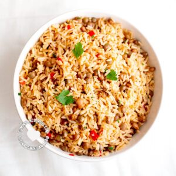

Arroz Con Guadules

Description
There is not a corner of our Republic where guandules are not known.
Guandules (Cajanus cajan) – known in English as pigeon peas – are a type of legume native to the Indian subcontinent, and very popular in the Spanish Caribbean.
This rice and pigeon pea recipe is an obligatory addition to any special Dominican-style meal and is also part of our traditional Dominican Christmas dinner.
Ingredients
- 2 tablespoons olive oil, divided
- 1 teaspoon chopped cilantro, (or parsley)
- ¼ cup chopped celery
- ⅛ cup capers, (optional)
- 1 teaspoon mashed garlic
- 12 pitted green olives, cut into halves (optional)
- ¼ cup chopped cubanelle, (1 pepper, aprox)
- 1 oregano (dry, ground)
- 2 teaspoons salt
- 3 cup pigeon peas, (boiled or canned)
- ½ cup tomato sauce
- 2 cup water or broth
- 4 cup rice, (medium grain, carolina, canilla)
Steps
- Heat 1 tablespoon of oil in a 1½ gallon [6 liters] iron pot and add the cilantro, celery, capers, garlic, olives, peppers, oregano, and salt.
Cook and stir for a minute. Add the guandules, also while stirring.
- Once the vegetables are well heated, add 2 cups of water, broth and tomato sauce and bring to a boil.
Stir in rice and simmer over medium heat, stirring regularly, and removing as much as you can of the rice that sticks to the bottom.
When all the water has evaporated cover with a tight-fitting lid and simmer over very low heat. Wait 15 minutes, uncover, and stir in the remaining oil. Move the rice from the bottom to the top so it cooks uniformly. Cover again and simmer another 5 minutes.
- Uncover and taste. The rice should be firm but tender inside. If necessary, cover and leave another 5 minutes on very low heat.
- Remove from the heat and serve (see suggestions above the recipe.